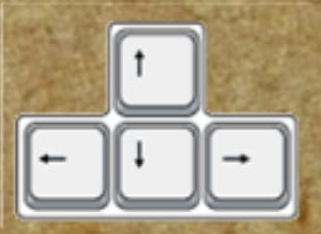

Sau một năm dài ở nhà học online, giờ đây học sinh việt đức đang dần mất gốc các môn học. Để củng cố lại kiến thức cũng như tình hình học hành chểnh mảng, học sinh việt đức phải đi trên con đường lấy lại kiến thức các môn học. Với các level môn học đa dạng cùng với những chướng ngại vật khó nhằn,liệu học sinh việt đức chúng ta có đạt được kết quả cao trong kỳ thi cuối kỳ hay sẽ nhận điểm kém và bị bố mẹ đuổi ra ngoài đường?
-Game này thuộc thể loại kiểu nhập vai phiêu lưu theo 1 cốt truyện (adventure + roleplay).
-Dùng 4 mũi tên  để di chuyển qua màn.
-Game gồm 5 level, 8 thử thách và 2 boss để thử thách người chơi trong con đường lấy lại "gốc".
-Lương Gia Bách: Leader, Game developer.
-Tạ Đình Nguyên: Web developer, Content creator.
-Nguyễn Đăng Tuấn Nghĩa: Game developer, Content creator.
-Vũ Phương Huyền: Designer, Game developer.
:D